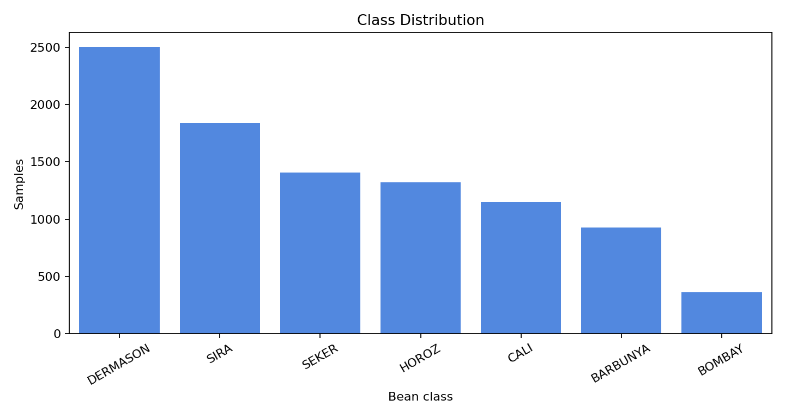
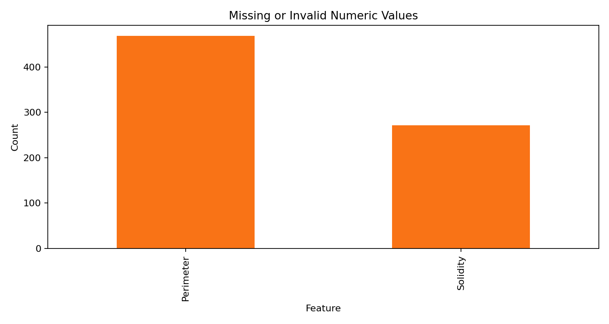
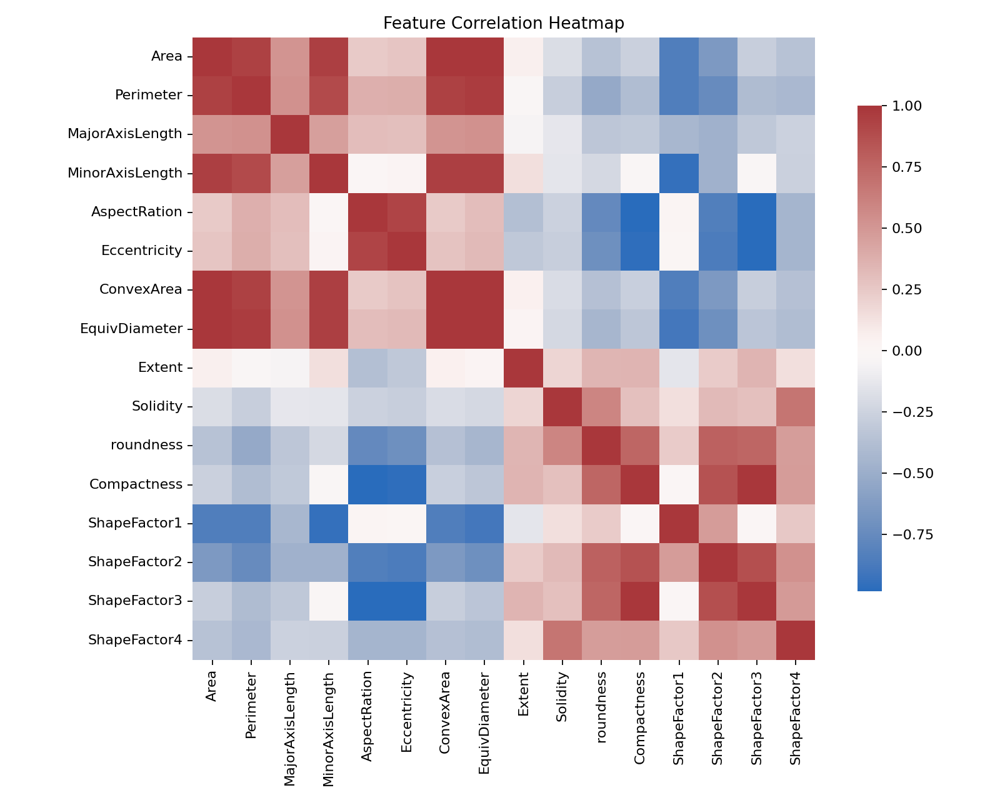
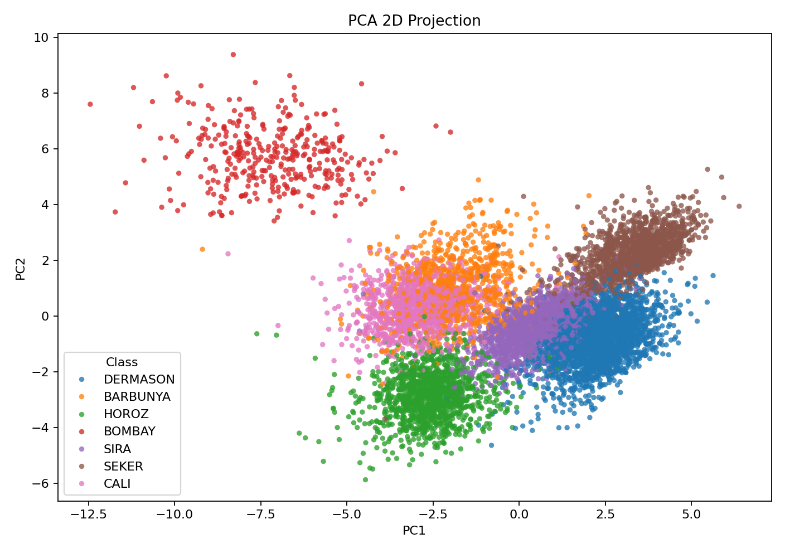
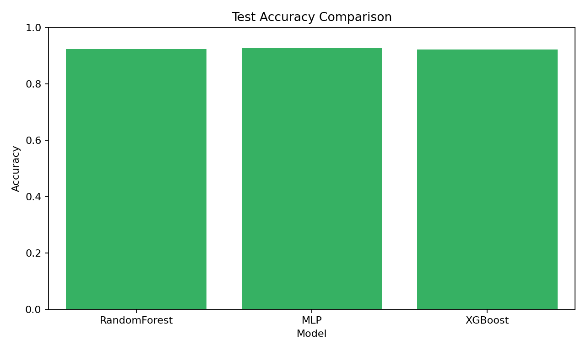
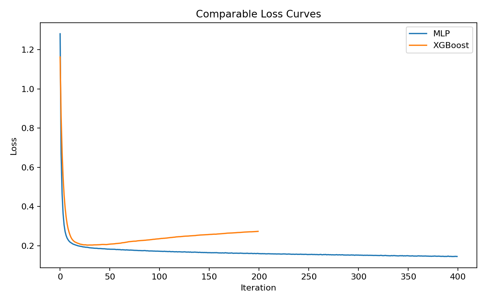
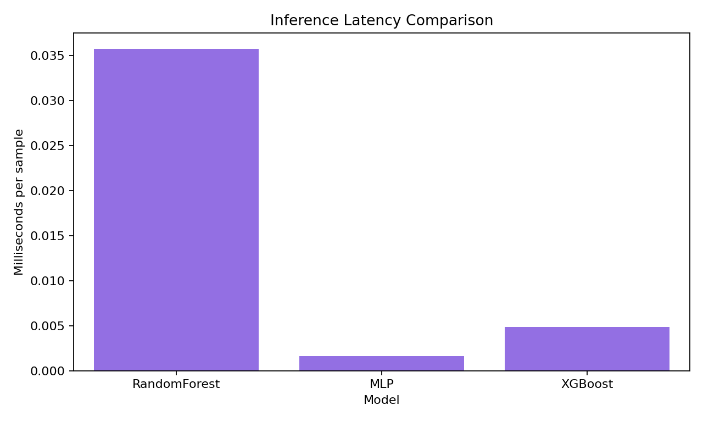
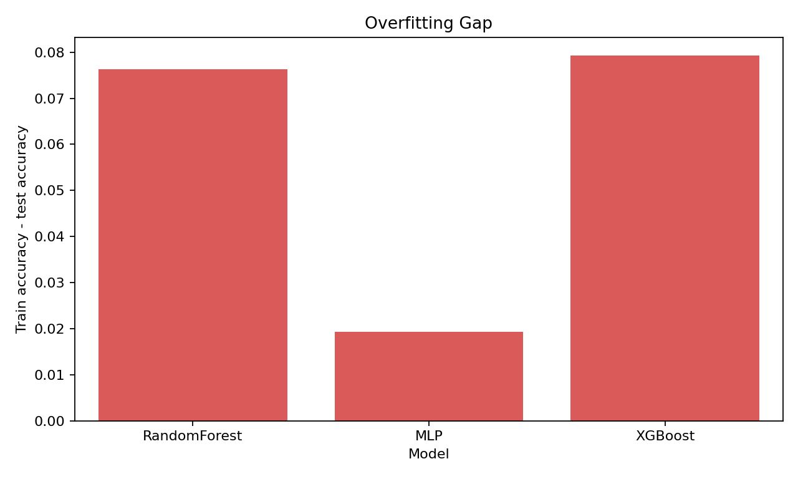
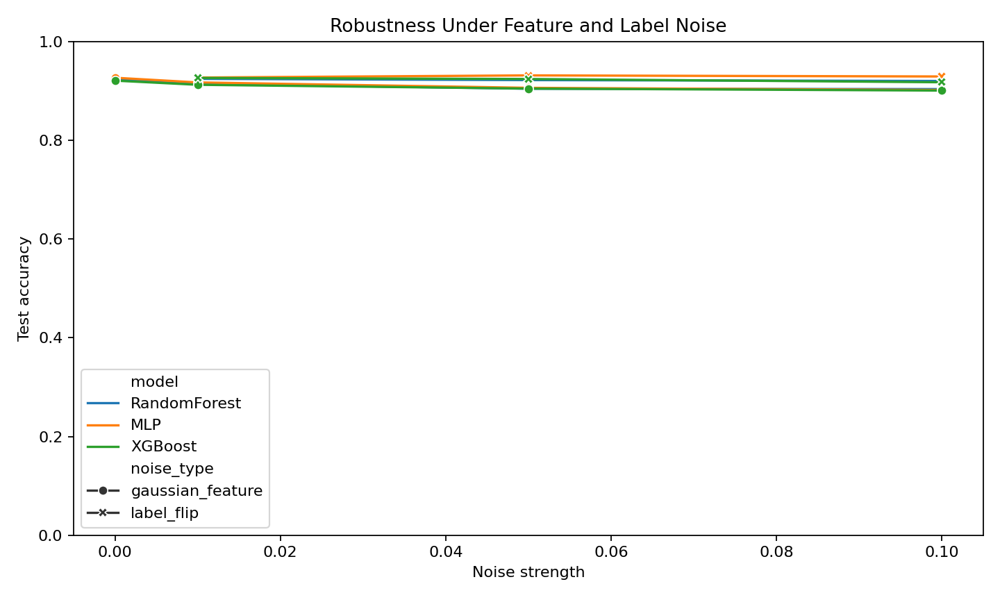
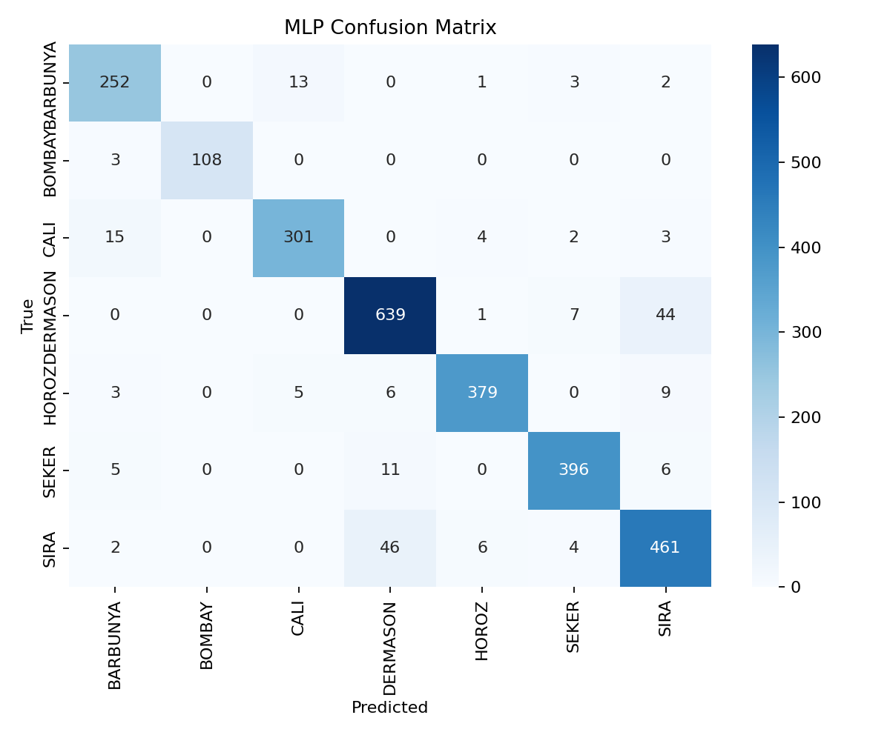

数据描述与污染观察
数据由干豆图像提取的几何与形态学特征组成，目标是预测 Class 中的干豆品种。训练集中发现的主要问题包括重复行、缺失值、数值列中的非法字符、类别标签格式不统一，以及强相关特征带来的冗余。




数据处理与特征工程
- 列名标准化，所有数值特征统一转为浮点数，逗号和非法字符通过强制类型转换识别。
- 删除重复样本，降低训练集泄漏和重复记忆风险。
- 数值缺失值使用训练数据中位数填充，避免均值受异常值拉偏。
- 类别标签去除非字母字符并转为大写，保证训练、测试标签编码一致。
- 所有模型输入使用
StandardScaler标准化，保证 MLP 与 XGBoost/随机森林处在统一评估流程下。
多算法实验结果
| model | acc_train | acc_test | overfit_gap | infer_ms_per_sample | macro_f1 |
|---|---|---|---|---|---|
| RandomForest | 1.0000 | 0.9236 | 0.0764 | 0.0358 | 0.9330 |
| MLP | 0.9458 | 0.9266 | 0.0193 | 0.0016 | 0.9352 |
| XGBoost | 1.0000 | 0.9207 | 0.0793 | 0.0049 | 0.9334 |




鲁棒性分析
在训练数据中加入两类噪声：数值特征高斯噪声和标签翻转噪声。下表与曲线展示模型随噪声强度增加的测试集精度变化。
| model | noise_type | strength | acc_test |
|---|---|---|---|
| RandomForest | gaussian_feature | 0.0000 | 0.9236 |
| MLP | gaussian_feature | 0.0000 | 0.9266 |
| XGBoost | gaussian_feature | 0.0000 | 0.9207 |
| RandomForest | gaussian_feature | 0.0100 | 0.9145 |
| MLP | gaussian_feature | 0.0100 | 0.9171 |
| XGBoost | gaussian_feature | 0.0100 | 0.9123 |
| RandomForest | gaussian_feature | 0.0500 | 0.9043 |
| MLP | gaussian_feature | 0.0500 | 0.9061 |
| XGBoost | gaussian_feature | 0.0500 | 0.9046 |
| RandomForest | gaussian_feature | 0.1000 | 0.9035 |
| MLP | gaussian_feature | 0.1000 | 0.9017 |
| XGBoost | gaussian_feature | 0.1000 | 0.9006 |
| RandomForest | label_flip | 0.0100 | 0.9244 |
| MLP | label_flip | 0.0100 | 0.9269 |
| XGBoost | label_flip | 0.0100 | 0.9262 |
| RandomForest | label_flip | 0.0500 | 0.9218 |
| MLP | label_flip | 0.0500 | 0.9313 |
| XGBoost | label_flip | 0.0500 | 0.9240 |
| RandomForest | label_flip | 0.1000 | 0.9200 |
| MLP | label_flip | 0.1000 | 0.9291 |
| XGBoost | label_flip | 0.1000 | 0.9174 |


工程运行方式
统一命令：python -m src.run_experiments --data-dir .. --out experiments/full_run --site-dir docs。算法运行阶段无 UI，所有表格、模型文件、图片和展示页面自动写入工程目录。
补充维度：最大精度下降
| model | noise_type | max | min | drop |
|---|---|---|---|---|
| MLP | gaussian_feature | 0.9266 | 0.9017 | 0.0248 |
| RandomForest | gaussian_feature | 0.9236 | 0.9035 | 0.0201 |
| XGBoost | gaussian_feature | 0.9207 | 0.9006 | 0.0201 |
| XGBoost | label_flip | 0.9262 | 0.9174 | 0.0088 |
| MLP | label_flip | 0.9313 | 0.9269 | 0.0044 |
| RandomForest | label_flip | 0.9244 | 0.9200 | 0.0044 |